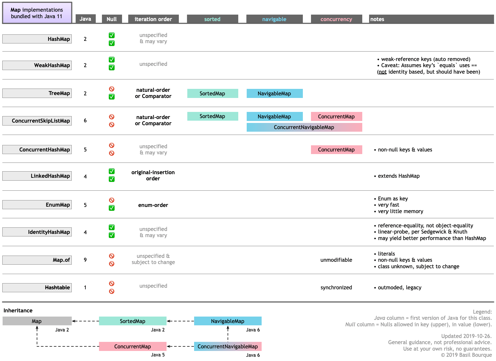
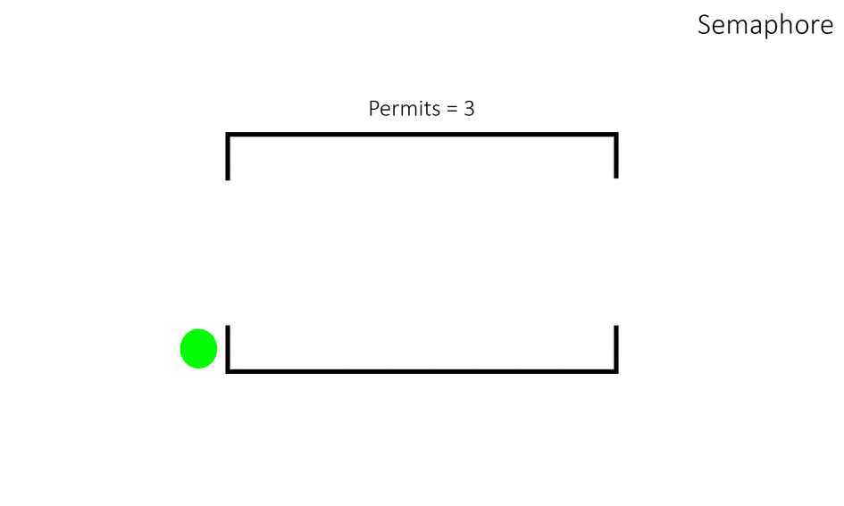
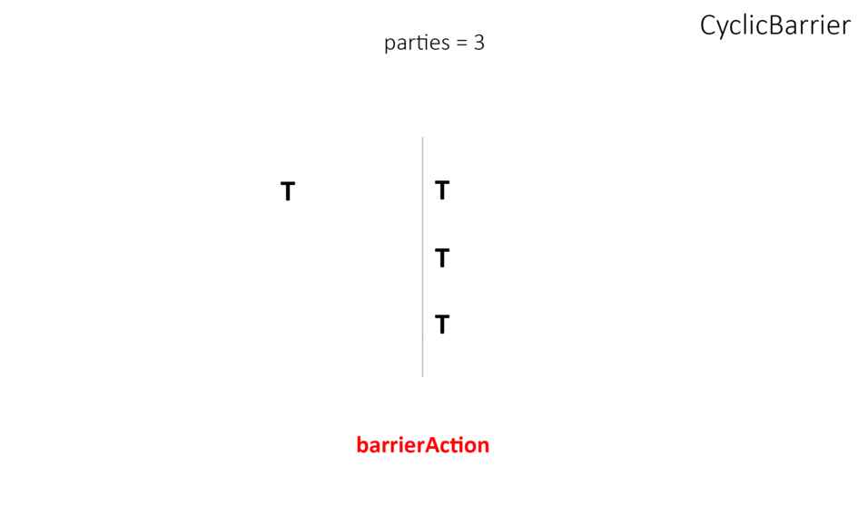
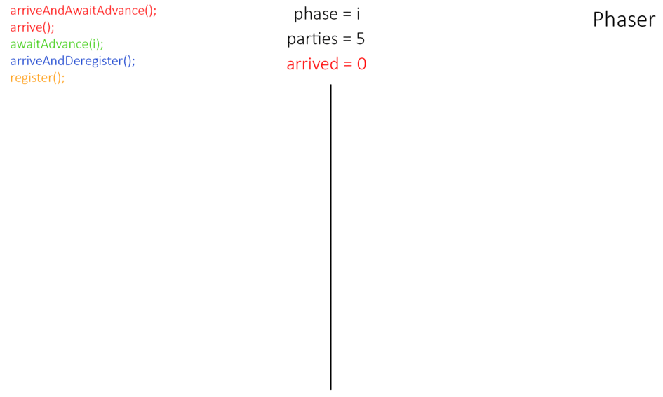

Intro
- Thread.start() / join(). Provide a Runnable object. The Runnable interface defines a single method,
run, meant to contain the code executed in the thread. The Runnable object is passed to the Thread
constructor, as in the HelloRunnable example:
The join method allows one thread to wait for the completion of another. If t is a Thread object whose thread is currently executing,public class HelloRunnable implements Runnable { public void run() { System.out.println("Hello from a thread!"); } public static void main(String args[]) { (new Thread(new HelloRunnable())).start(); } }
causes the current thread to pause execution until t's thread terminates. Overloads of join allow the programmer to specify a waiting period. However, as with sleep, join is dependent on the OS for timing, so you should not assume that join will wait exactly as long as you specify.t.join();
Like sleep, join responds to an interrupt by exiting with an InterruptedException. - Volatile. The Java volatile keyword is intended to address variable visibility problems. By declaring the counter variable volatile all writes to the counter variable will be written back to main memory immediately. Also, all reads of the counter variable will be read directly from main memory.
-
CAS (Compare and Swap).
CAS is generally much faster than locking, but it does depend on the degree of contention. Because CAS may force a retry if the value changes between reading and comparing, a thread can theoretically get stuck in a busy-wait if the variable in question is being hit hard by many other threads (or if it is expensive to compute a new value from the old value (or both)).
The main issue with CAS is that it is much more difficult to program with correctly than locking. Mind you, locking is, in turn, much harder to use correctly than message-passing or STM, so don't take this as a ringing endorsement for the use of locks. -
Double checked locking.
// Broken multithreaded version // "Double-Checked Locking" idiom class Foo { private Helper helper; public Helper getHelper() { if (helper == null) { synchronized (this) { if (helper == null) { helper = new Helper(); } } } return helper; } // other functions and members... } - safe publishing
- Synchronized, Object.wait() / notify() / notifyAll()
Concurrent Collections
-
BlockingQueue
BlockingQueue methods come in four forms, with different ways of handling operations that cannot be satisfied immediately, but may be satisfied at some point in the future: one throws an exception, the second returns a special value (either null or false, depending on the operation), the third blocks the current thread indefinitely until the operation can succeed, and the fourth blocks for only a given maximum time limit before giving up.
A BlockingQueue does not accept null elements. Implementations throw NullPointerException on attempts to add, put or offer a null. A null is used as a sentinel value to indicate failure of poll operations.
- ArrayBlockingQueue
- LinkedBlockingQueue
- LinkedBlockingDeque
- SynchronousQueue
- LinkedTransferQueue
- DelayQueue
- PriorityBlockingQueue
-
ConcurrentHashMap
A hash table supporting full concurrency of retrievals and high expected concurrency for updates. This class obeys the same functional specification as Hashtable, and includes versions of methods corresponding to each method of Hashtable. However, even though all operations are thread-safe, retrieval operations do not entail locking, and there is not any support for locking the entire table in a way that prevents all access. This class is fully interoperable with Hashtable in programs that rely on its thread safety but not on its synchronization details.
ConcurrentSkipListMap
A scalable concurrent ConcurrentNavigableMap implementation. The map is sorted according to the natural ordering of its keys, or by a Comparator provided at map creation time, depending on which constructor is used.
This class implements a concurrent variant of SkipLists providing expected average log(n) time cost for the containsKey, get, put and remove operations and their variants. Insertion, removal, update, and access operations safely execute concurrently by multiple threads.
 -
CopyOnWriteArrayList, CopyOnWriteArraySet.
A thread-safe variant of ArrayList in which all mutative operations (add, set, and so on) are implemented by making a fresh copy of the underlying array.
This is ordinarily too costly, but may be more efficient than alternatives when traversal operations vastly outnumber mutations, and is useful when you cannot or don't want to synchronize traversals, yet need to preclude interference among concurrent threads. The "snapshot" style iterator method uses a reference to the state of the array at the point that the iterator was created. This array never changes during the lifetime of the iterator, so interference is impossible and the iterator is guaranteed not to throw ConcurrentModificationException. The iterator will not reflect additions, removals, or changes to the list since the iterator was created. Element-changing operations on iterators themselves (remove, set, and add) are not supported. These methods throw UnsupportedOperationException. All elements are permitted, including null.
Synchronizers
-
Lock
All Lock implementations must enforce the same memory synchronization semantics as provided by the built-in monitor lock, as described in section 17.4 of The Java™ Language Specification:Lock l = ...; l.lock(); try { // access the resource protected by this lock } finally { l.unlock(); }- A successful lock operation has the same memory synchronization effects as a successful Lock action.
- A successful unlock operation has the same memory synchronization effects as a successful Unlock action.
-
Condition
Condition factors out the Object monitor methods (wait, notify and notifyAll) into distinct objects to give the effect of having multiple wait-sets per object, by combining them with the use of arbitrary Lock implementations. Where a Lock replaces the use of synchronized methods and statements, a Condition replaces the use of the Object monitor methods.
Conditions (also known as condition queues or condition variables) provide a means for one thread to suspend execution (to "wait") until notified by another thread that some state condition may now be true. Because access to this shared state information occurs in different threads, it must be protected, so a lock of some form is associated with the condition. The key property that waiting for a condition provides is that it atomically releases the associated lock and suspends the current thread, just like Object.wait.
A Condition instance is intrinsically bound to a lock. To obtain a Condition instance for a particular Lock instance use its newCondition() method.
class BoundedBuffer { final Lock lock = new ReentrantLock(); final Condition notFull = lock.newCondition(); final Condition notEmpty = lock.newCondition(); final Object[] items = new Object[100]; int putptr, takeptr, count; public void put(Object x) throws InterruptedException { lock.lock(); try { while (count == items.length) notFull.await(); items[putptr] = x; if (++putptr == items.length) putptr = 0; ++count; notEmpty.signal(); } finally { lock.unlock(); } } public Object take() throws InterruptedException { lock.lock(); try { while (count == 0) notEmpty.await(); Object x = items[takeptr]; if (++takeptr == items.length) takeptr = 0; --count; notFull.signal(); return x; } finally { lock.unlock(); } } } -
ReentrantLock
A reentrant mutual exclusion Lock with the same basic behavior and semantics as the implicit monitor lock accessed using synchronized methods and statements, but with extended capabilities.
A ReentrantLock is owned by the thread last successfully locking, but not yet unlocking it. A thread invoking lock will return, successfully acquiring the lock, when the lock is not owned by another thread. The method will return immediately if the current thread already owns the lock. This can be checked using methods isHeldByCurrentThread(), and getHoldCount(). -
ReentrantReadWriteLock
An implementation of ReadWriteLock supporting similar semantics to ReentrantLock.
This class has the following properties:- Acquisition order. This class does not impose a reader or writer preference ordering for lock
access. However, it does support an optional fairness policy.
- Non-fair mode (default). When constructed as non-fair (the default), the order of entry to the read and write lock is unspecified, subject to reentrancy constraints. A nonfair lock that is continuously contended may indefinitely postpone one or more reader or writer threads, but will normally have higher throughput than a fair lock.
- Fair mode. When constructed as fair, threads contend for entry using an approximately arrival-order policy. When the currently held lock is released either the longest-waiting single writer thread will be assigned the write lock, or if there is a group of reader threads waiting longer than all waiting writer threads, that group will be assigned the read lock. A thread that tries to acquire a fair read lock (non-reentrantly) will block if either the write lock is held, or there is a waiting writer thread. The thread will not acquire the read lock until after the oldest currently waiting writer thread has acquired and released the write lock. Of course, if a waiting writer abandons its wait, leaving one or more reader threads as the longest waiters in the queue with the write lock free, then those readers will be assigned the read lock. A thread that tries to acquire a fair write lock (non-reentrantly) will block unless both the read lock and write lock are free (which implies there are no waiting threads). (Note that the non-blocking ReentrantReadWriteLock.ReadLock.tryLock() and ReentrantReadWriteLock.WriteLock.tryLock() methods do not honor this fair setting and will acquire the lock if it is possible, regardless of waiting threads.)
- Reentrancy. This lock allows both readers and writers to reacquire read or write locks in the style of a ReentrantLock. Non-reentrant readers are not allowed until all write locks held by the writing thread have been released. Additionally, a writer can acquire the read lock, but not vice-versa. Among other applications, reentrancy can be useful when write locks are held during calls or callbacks to methods that perform reads under read locks. If a reader tries to acquire the write lock it will never succeed.
- Lock downgrading. Reentrancy also allows downgrading from the write lock to a read lock, by acquiring the write lock, then the read lock and then releasing the write lock. However, upgrading from a read lock to the write lock is not possible.
- Interruption of lock acquisition. The read lock and write lock both support interruption during lock acquisition.
class RWDictionary { private final Map<String, Data> m = new TreeMap<String, Data>(); private final ReentrantReadWriteLock rwl = new ReentrantReadWriteLock(); private final Lock r = rwl.readLock(); private final Lock w = rwl.writeLock(); public Data get(String key) { r.lock(); try { return m.get(key); } finally { r.unlock(); } } public String[] allKeys() { r.lock(); try { return m.keySet().toArray(); } finally { r.unlock(); } } public Data put(String key, Data value) { w.lock(); try { return m.put(key, value); } finally { w.unlock(); } } public void clear() { w.lock(); try { m.clear(); } finally { w.unlock(); } } } - Acquisition order. This class does not impose a reader or writer preference ordering for lock
access. However, it does support an optional fairness policy.
-
StampedLock
StampedLock is an alternative to using a ReadWriteLock (implemented by ReentrantReadWriteLock). The main differences between StampedLock and ReentrantReadWriteLock are that:- StampedLocks allow optimistic locking for read operations
- ReentrantLocks are reentrant (StampedLocks are not)
A capability-based lock with three modes for controlling read/write access. The state of a StampedLock consists of a version and mode. Lock acquisition methods return a stamp that represents and controls access with respect to a lock state; "try" versions of these methods may instead return the special value zero to represent failure to acquire access. Lock release and conversion methods require stamps as arguments, and fail if they do not match the state of the lock. The three modes are:- Writing. Method writeLock() possibly blocks waiting for exclusive access, returning a stamp that can be used in method unlockWrite(long) to release the lock. Untimed and timed versions of tryWriteLock are also provided. When the lock is held in write mode, no read locks may be obtained, and all optimistic read validations will fail.
- Reading. Method readLock() possibly blocks waiting for non-exclusive access, returning a stamp that can be used in method unlockRead(long) to release the lock. Untimed and timed versions of tryReadLock are also provided.
- Optimistic Reading. Method tryOptimisticRead() returns a non-zero stamp only if the lock is not currently held in write mode. Method validate(long) returns true if the lock has not been acquired in write mode since obtaining a given stamp. This mode can be thought of as an extremely weak version of a read-lock, that can be broken by a writer at any time. The use of optimistic mode for short read-only code segments often reduces contention and improves throughput. However, its use is inherently fragile. Optimistic read sections should only read fields and hold them in local variables for later use after validation. Fields read while in optimistic mode may be wildly inconsistent, so usage applies only when you are familiar enough with data representations to check consistency and/or repeatedly invoke method validate(). For example, such steps are typically required when first reading an object or array reference, and then accessing one of its fields, elements or methods.
class Point { private double x, y; private final StampedLock sl = new StampedLock(); void move(double deltaX, double deltaY) { // an exclusively locked method long stamp = sl.writeLock(); try { x += deltaX; y += deltaY; } finally { sl.unlockWrite(stamp); } } double distanceFromOrigin() { // A read-only method long stamp = sl.tryOptimisticRead(); double currentX = x, currentY = y; if (!sl.validate(stamp)) { stamp = sl.readLock(); try { currentX = x; currentY = y; } finally { sl.unlockRead(stamp); } } return Math.sqrt(currentX * currentX + currentY * currentY); } void moveIfAtOrigin(double newX, double newY) { // upgrade // Could instead start with optimistic, not read mode long stamp = sl.readLock(); try { while (x == 0.0 && y == 0.0) { long ws = sl.tryConvertToWriteLock(stamp); if (ws != 0L) { stamp = ws; x = newX; y = newY; break; } else { sl.unlockRead(stamp); stamp = sl.writeLock(); } } } finally { sl.unlock(stamp); } } } -
Semaphore.
 -
CountDownLatch.

-
CyclicBarrier
 -
Exchanger
-
Phaser

Thread pool
- Executors
- ExecutorService
- ThreadPoolExecutor
- ScheduledExecutorService
- ScheduledThreadPoolExecutor
Future
- Callable
- Future
Atomic
The java.util.concurrent.atomic package defines classes that support atomic operations on single variables. All classes have get and set methods that work like reads and writes on volatile variables. That is, a set has a happens-before relationship with any subsequent get on the same variable. The atomic compareAndSet method also has these memory consistency features, as do the simple atomic arithmetic methods that apply to integer atomic variables.
// not thread safe
class Counter {
private int c = 0;
public void increment() {
c++;
}
public void decrement() {
c--;
}
public int value() {
return c;
}
}// synchronized
class SynchronizedCounter {
private int c = 0;
public synchronized void increment() {
c++;
}
public synchronized void decrement() {
c--;
}
public synchronized int value() {
return c;
}
}// atomic
import java.util.concurrent.atomic.AtomicInteger;
class AtomicCounter {
private AtomicInteger c = new AtomicInteger(0);
public void increment() {
c.incrementAndGet();
}
public void decrement() {
c.decrementAndGet();
}
public int value() {
return c.get();
}
}Accumulator
One or more variables that together maintain a running long value updated using a supplied function. When updates (method accumulate(long)) are contended across threads, the set of variables may grow dynamically to reduce contention. Method get() (or, equivalently, longValue()) returns the current value across the variables maintaining updates.
This class is usually preferable to AtomicLong when multiple threads update a common value that is used for purposes such as collecting statistics, not for fine-grained synchronization control. Under low update contention, the two classes have similar characteristics. But under high contention, expected throughput of this class is significantly higher, at the expense of higher space consumption.
The order of accumulation within or across threads is not guaranteed and cannot be depended upon, so this class is only applicable to functions for which the order of accumulation does not matter. The supplied accumulator function should be side-effect-free, since it may be re-applied when attempted updates fail due to contention among threads. The function is applied with the current value as its first argument, and the given update as the second argument. For example, to maintain a running maximum value, you could supply Long::max along with Long.MIN_VALUE as the identity.
Class LongAdder provides analogs of the functionality of this class for the common special case of maintaining counts and sums. The call new LongAdder() is equivalent to new LongAccumulator((x, y) -> x + y, 0L.
This class extends Number, but does not define methods such as equals, hashCode and compareTo because instances are expected to be mutated, and so are not useful as collection keys.
Related articles: